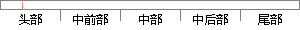

单站无源定位系统常用的观测量是方位角，利用方位角及其变化确定目标与观测站之间的距离r。
片段位置图

相似结果|
相似片段 1：的后利用方位角及其变化率对固定目标的定位，根据模型二可知在增加观测量后系统可以实现瞬时定位，具有快速精确定位的潜力。2．3本章小结模型的建立是无源定位跟踪的基础，具有十分重要的意义。只有建立的模型反映
相似片段 2：必须进行可观测性分析。本文基于方位角测量无源定位系统可观测性分析是指，研究只利用方位角信息，观测器需要满足在什么运动条件下，可以实现静止或运动目标的唯一定位或跟踪。2．4．1常用可观测性判据及其纯方位
相似片段 3：与观测站之间的相对运动，通过观测站上的干涉仪测量得到目标辐射源的相位差变化率信息，就能够计算得到目标辐射源的位置信息【251。方位角及其变化率也能够实现对目标的实时定位【l31。目前该方法的定位滤波算法
相似片段 4：：时，即目标位于两个无源观测站的基线及其延长线上，此时不能确定目标的位置，所以在本文中一律假设目标不位于两个无源观测站的基线及其延长线上。图1定位模糊区图利用两个无源传感器的方位角测量值a，、a：以及
|
※ 片段修改建议 ※
近似词参考：- 系统：体系
- 常用：经常使用
- 观测：观察
- 测量：丈量
- 利用：操纵 哄骗 使用 行使 应用
- 变化：转变 变革
- 确定：肯定
- 目标：方针 目的
- 距离：间隔
系统自动生成语句：单站无源定位体系经常使用的观察量是方位角，操纵方位角及其转变肯定方针与观察站之间的间隔r。
注：本片段修改建议为系统自动生成，仅供参考。